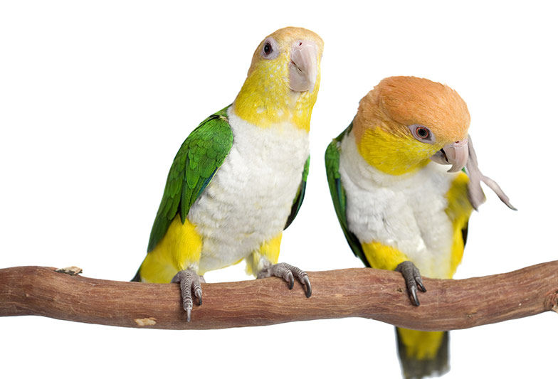

Een recept voor gezonde papegaaien
Introductie
GM Breeders is een uitstekend voorbeeld van een van de meest gewilde ondernemingen ter wereld – een Israëlische start-up. GM is gevestigd in de prachtige, vruchtbare Jizreëlvallei, vlak bij de grootste noordelijke stad van Israël, de oude havenstad Haifa, en werd in 2010 opgericht door Gai Sagi, afgestudeerd in biotechnologie, die al 20 jaar professioneel papegaaien fokt.
GM Breeders Natural Digestive Formula (NDF) wordt geproduceerd in een van de grootste industriële fabrieken van Israël, een ultramoderne faciliteit met een breed scala aan nieuwe en unieke productietechnologieën.
De uitgebalanceerde en nauwkeurige mix van ingrediënten wordt zorgvuldig getest in het toonaangevende GLP-laboratorium voor mens- en diervoeding van het land, om de beste en gezondste oplossing te bieden voor de natuurlijke behoeften van uw papegaai.
Het bedrijf is financieel stabiel, met succesvolle, ervaren investeerders, en profiteert van een team deskundige adviseurs op het gebied van vogelvoeding en vogeldiergeneeskunde.
Papegaaien behoren tot de duurste en meest bedreigde vogels, en GM is opgericht om fokkers wereldwijd te helpen uitstekende resultaten te behalen. Onze visie is ervoor te zorgen dat het voer van papegaaien van uitzonderlijke kwaliteit en zeer voedzaam is, en wezenlijk bijdraagt aan gezondere vogels, een langer leven, een mooier verenkleed en – het allerbelangrijkste – betere voortplanting.
De producten van GM zijn het resultaat van jarenlang onderzoek en ervaring, die hebben geleid tot een reeks specifieke, unieke formules die optimaal inspelen op de behoeften van veel verschillende papegaaiensoorten. Ze bestaan uit hoogwaardige grondstoffen en worden geproduceerd met technologie die de voedingswaarde maximaal behoudt, met veel aandacht voor het milieu.
Wij bij GM Breeders weten dat zulke prachtige resultaten alleen te bereiken zijn met echte liefde voor levende wezens, gecombineerd met een gepassioneerde zorg voor het behoud van onze natuurlijke hulpbronnen.
